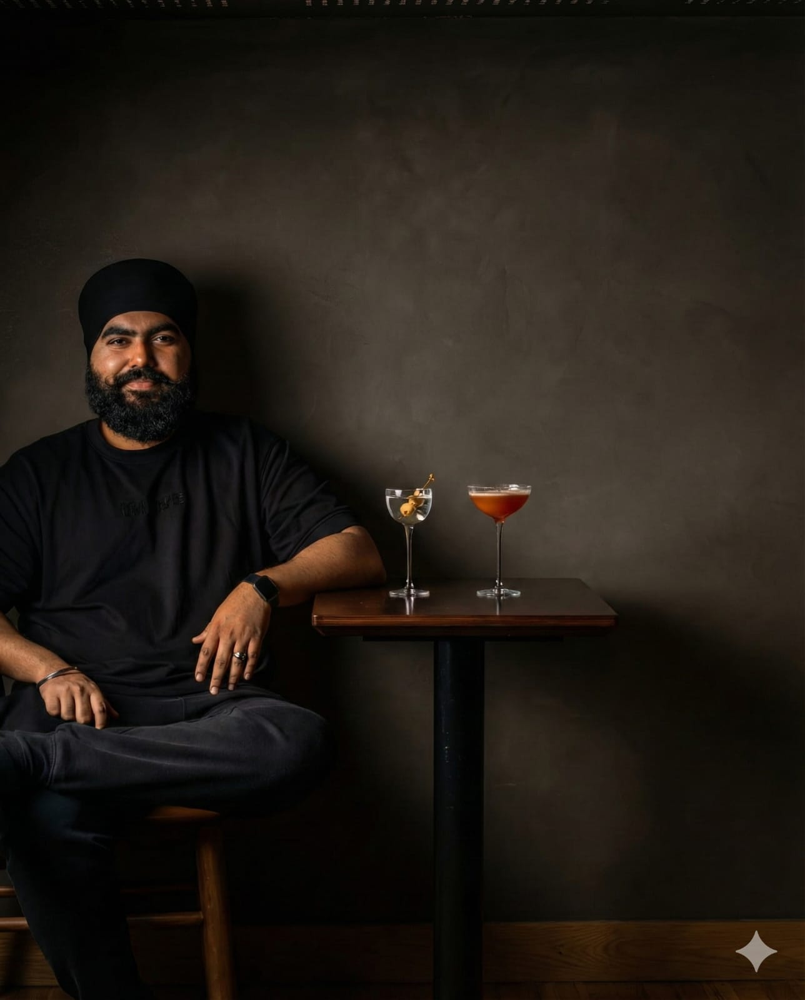
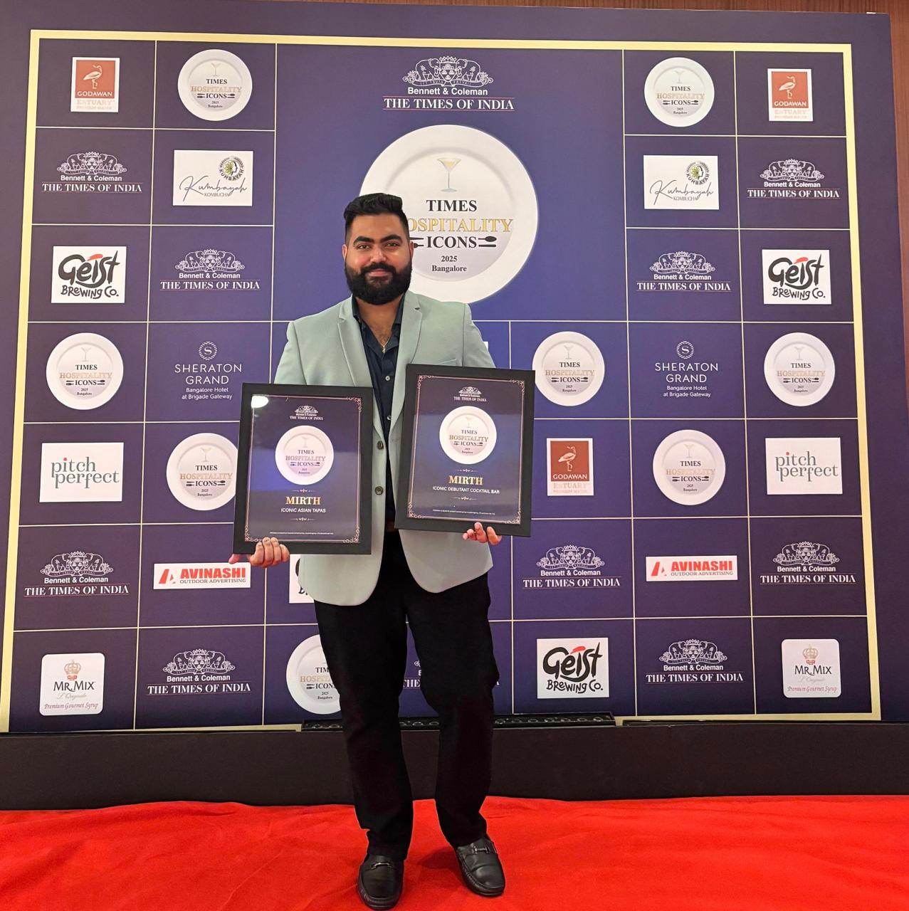

Decades of culinary mastery, translated into operational success.

From formative years refining techniques in diverse global kitchens to leading multi-outlet operations as a Chief Culinary Officer, the chef’s journey is rooted in continuous evolution.
Having mastered every facet of the back-of-house—from meticulous R&D to brigade leadership—this extensive background is now the driving force behind The Taste Edit. Here, battle-tested operational knowledge is channeled into building resilient, highly profitable culinary brands.
We understand that a great dish is only half the equation; the other half is consistency, sourcing, and team execution. Drawing from experience, we bring a wealth of operational knowledge to every project.
Recognized for culinary excellence and outstanding dining experiences across multiple premium venues.
by Times Hospitality Icons [TOI]
Mirth Blr, Bengaluru
2025
Mirth Blr, Bengaluru
"A Nostalgic Yet Modern Tribute to Old Bangalore's Pub Culture" — 2025
Mirth Blr, Bengaluru
Celebrating the launch of the city's newest cocktail destination — 2025

Prioritizing seasonal, hyper-local sourcing to ensure flavors speak for themselves.
Applying classical techniques to modern concepts for flawless, repeatable execution.
Engineering menus that utilize cross-product usage to maximize margins and sustainability.
Chifa (Sister LLP of Golden Spice Hospitality)
Bengaluru, India
Mirth Blr (Golden Spice Hospitality)
Bengaluru, India
The Lost Springs
Whitianga, New Zealand
Roxie, India's First Crafthouse
Bengaluru, India
Beno: All Day Breakfast and Bar
Goa, India
The Host by Atelier House Hospitality
Dubai
Leverage our global experience to optimize your culinary operations.
Get In Touch